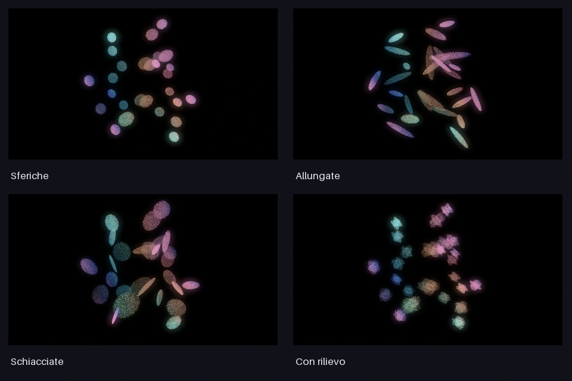

Cellule instanziate
La nube si raggruppa in cellule, raggiunge la forma della colonia e torna alla nube in quattro secondi.
Profili cellulari

In Forma → Nucleo → Cellule di granelli, regola Raggruppamento, Proporzioni e Rilievo. In Luci → Illuminazione, il Gradiente di luce tra cellule usa la direzione del gradiente in Colori. I quattro cursori si possono animare.